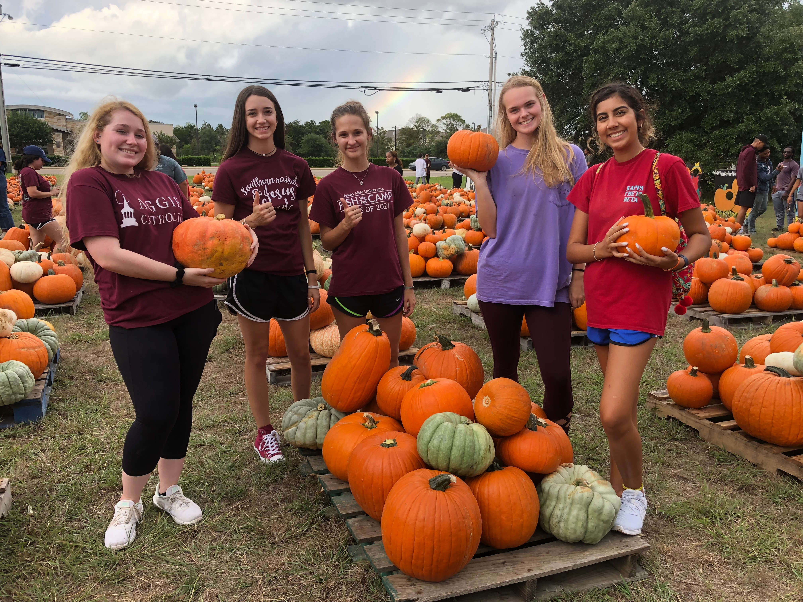
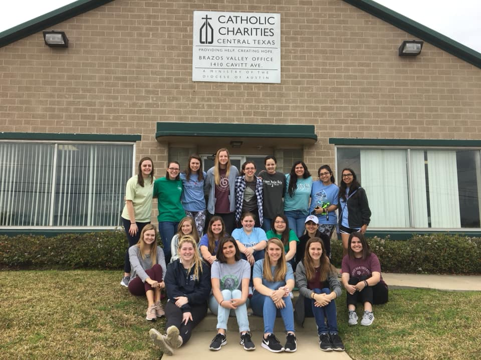
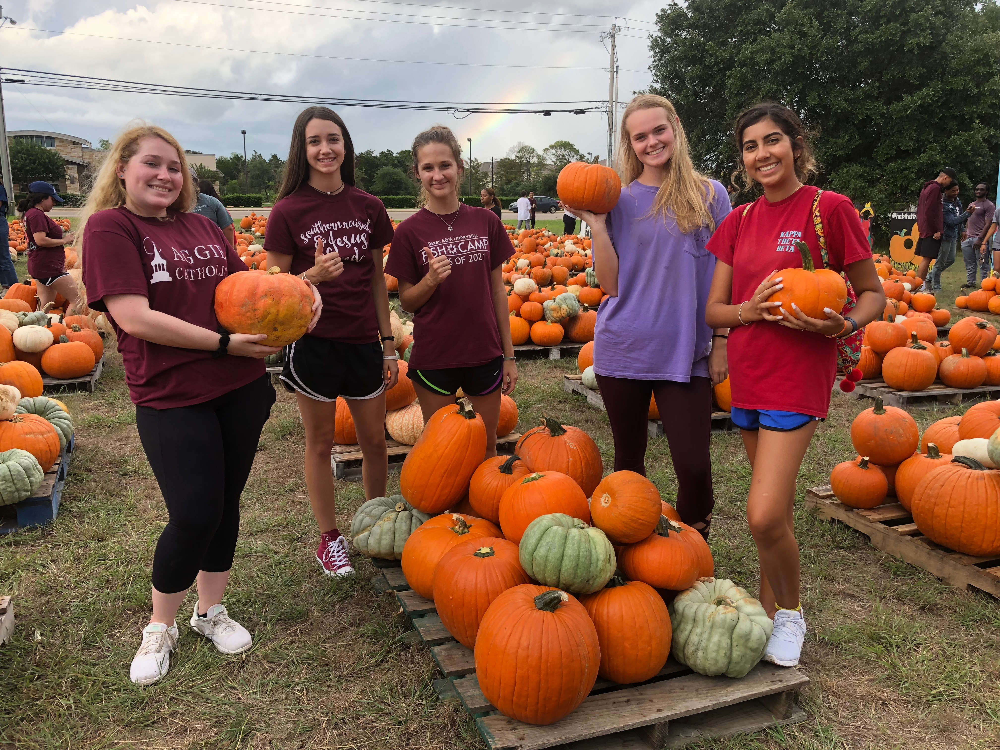
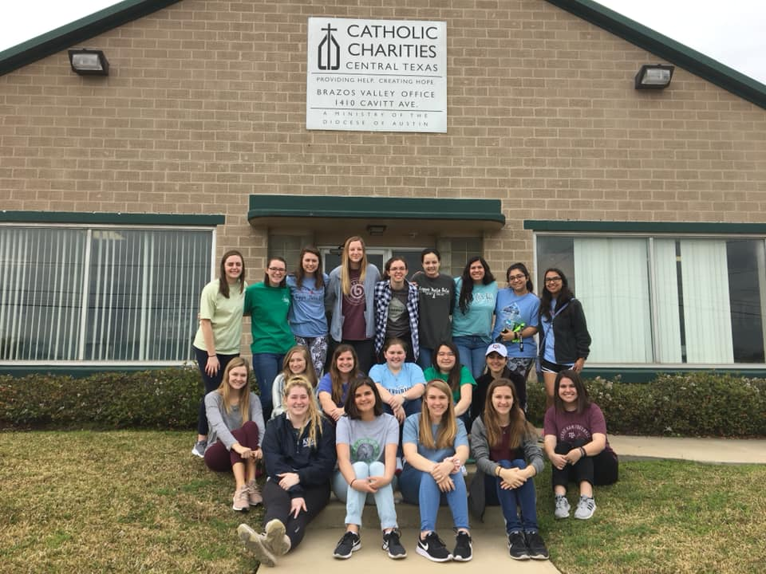

Service
Since I was in National Honor Society for three years in high school, I did a lot of service projects and discovered that I really liked to give back to the community. Once I got to college, I wanted to keep doing community service projects, so I participated in the Big Event during my freshman year. The Big Event is a Texas A&M campus-wide service event where students get to give back to the residents of Bryan and College Station by completing service projects. My freshman year (2018), I helped an elderly woman clean her house, organize her garage, and landscape her yard. I did the Big Event again sophomore year (2019) and I did yard work, like pulling weeds, laying mulch, and planting plants, for a young couple.
My sophomore year of college, I joined Kappa Theta Beta and one of its three pillars is service. Because of this, I have been able to do even more community service since joining, such as helping unload and put out pumpkins for the Habitat for Humanity Pumpkin Patch, being a greeter for St. Mary's Catholic Church a few times, and passing out snacks after an event at St. Mary's. However, one of my favorite places to volunteer is Catholic Charities in Bryan, TX, which is KTB's philanthropy. It is a non-profit organization whose mission is to help provide service for those in need. They provide free services to those in crisis pregnancy situations, such as parenting education and donations of maternity and baby clothing, and other forms of disaster relief. Once a semester, KTB has a Catholic Charities Day where we go and help them with whatever they need. So far, I have helped sort baby clothes, create hygiene kits for babies, children, and adults, and go through diapers. Aggie Awakening, which is also hosted by St. Mary's, is a life-changing Catholic weekend retreat. I had the privilege of attending AA115, and I also volunteered as a staffer for AA116 where I helped with things like set up, clean up, and delivering things. Recently, I have also helped out Clear Brook High School's volleyball booster club by doing some PDF scripting to make some fillable PDFs for them.
 


